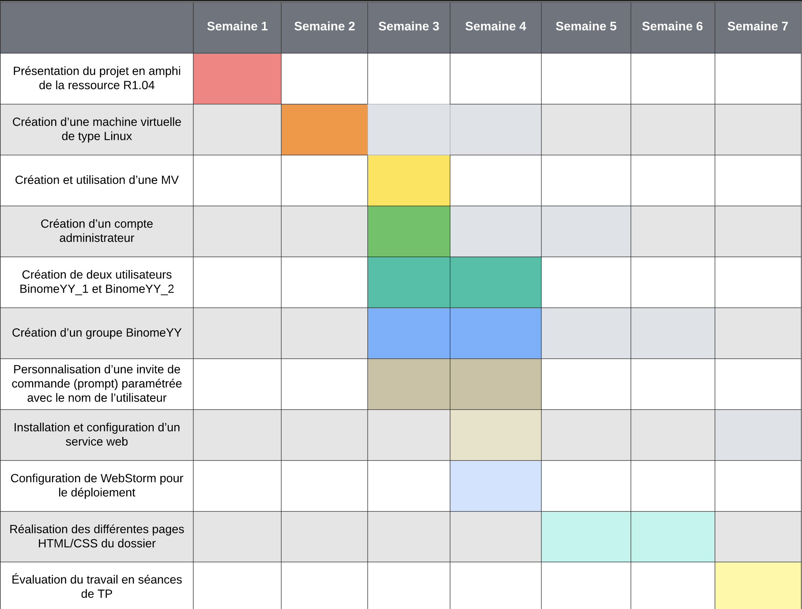

Organisation du Groupe
Notre groupe est composé de trois membres : Matteo, Romeo, et Marius. Chacun a des responsabilités spécifiques pour assurer le bon déroulement du projet.
Diagramme de Gantt
Répartition des Tâches
Les tâches ont été réparties de manière à tirer parti des compétences de chacun :
-
Matteo :
- Semaine S1-B2 : Création d’une machine virtuelle de type Linux(Debian 12) sur VirtualBox…
- Semaine S1-B3 : Création d’un compte administrateur admin_Gr01_Binome03 et personnalisation d’une invite de commande (prompt) paramétrée avec le nom de l’utilisateur.
-
Romeo :
- Semaine S1-B4 : Installation et configuration d’un service web (Nginx, …).
- Semaine S1-B4 : Déploiement d'un site web avec SCP.
-
Marius :
- Semaine S1-B3 : Création de deux utilisateurs Binome03_1 et Binome03_2, et création du groupe Binome03.
- Semaine S1-B5 à B6 : Réalisation des différentes pages HTML/CSS du dossier.